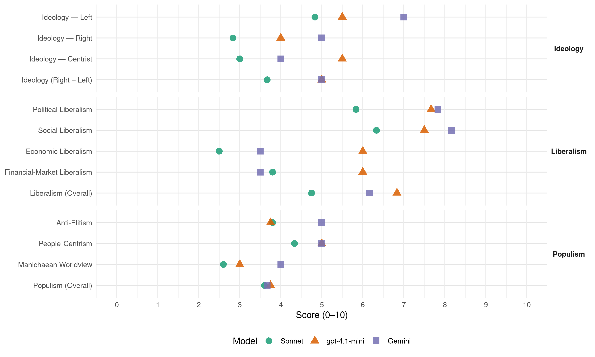

Sp (Norway, 2005)
manifesto_id 12810_200509
Get full text: This site shows derived annotations and short verbatim quotes only. The full manifesto text is © Manifesto Project / WZB — obtain it via manifesto-project.wzb.eu using the manifesto_id above.
Headline scores
| Dimension | Sonnet | gpt-4.1-mini | Gemini |
|---|---|---|---|
| Populism (Overall) | 3.6 | 3.8 | 3.7 |
| Anti-Elitism | 3.8 | 3.8 | 5.0 |
| People-Centrism | 4.3 | 5.0 | 5.0 |
| Manichaean Worldview | 2.6 | 3.0 | 4.0 |
| Ideology (Right − Left) | 3.7 | 5.0 | 5.0 |
| Liberalism (Overall) | 4.8 | 6.8 | 6.2 |
| Political Liberalism | 5.8 | 7.7 | 7.8 |
| Social Liberalism | 6.3 | 7.5 | 8.2 |
| Economic Liberalism | 2.5 | 6.0 | 3.5 |
| Financial-Market Liberalism | 3.8 | 6.0 | 3.5 |
Evidence per dimension
Economic Liberalism
Gemini · score 2.0 · verified · chunk 1
“motarbeide en liberalistisk politikk basert på frihandel”
Senterpartiet ble dannet for å motarbeide en liberalistisk politikk basert på frihandel, fri konkurranse og den sterkestes rett
Gemini · score 4.0 · mixed · chunk 2
“privat initiativ og entreprenørskap utnytter markedsøkonomien”
basert på en blandingsøkonomi, der privat initiativ og entreprenørskap utnytter markedsøkonomien, med det offentlige i en aktiv
Gemini · score 3.0 · verified · chunk 3
“å privatisere denne er etter Senterpartiets mening uaktuelt”
del av den helt essensielle infrastrukturen i Norge – å privatisere denne er etter Senterpartiets mening uaktuelt. Ren og rimelig kraft er en av Norges
Gemini · score 6.0 · verified · chunk 4
“godt fungerende marked er en forutsetning”
Et godt fungerende marked er en forutsetning for rasjonell vareomsetning og effektiv
Gemini · score 6.0 · mixed · chunk 5
“fremme utvikling i små og mellomstore bedrifter”
heve frikortgrensen for skatt betydelig. fremme utvikling i små og mellomstore bedrifter gjennom et skattesystem som i større grad lar dem
Gemini · score 3.0 · verified · chunk 6
“beskytte innenlands matproduksjon mot økende internasjonal handelsliberalisering”
arbeide for å få mer lokalprodusert mat inn i butikkene. beskytte innenlands matproduksjon mot økende internasjonal handelsliberalisering. stimulere til en mangfoldig og variert
gpt-4.1-mini · score 4.0 · verified · chunk 1
“motarbeider partiet en utvikling der markedskrefter får rå over sentrale oppgaver”
På lokalt plan motarbeider partiet en utvikling der markedskrefter får rå over sentrale oppgaver som det offentlige hittil har tatt hånd om.
gpt-4.1-mini · score 7.0 · verified · chunk 2
“forenkle lover og regelverk og få langsiktige rammevilkår”
Senterpartiet vil arbeide for forenklinger i lover og regelverk, fjerne byråkrati og regelverk samt sikre større langsiktighet når det gjelder skatter og avgifterxe “skatter og avgifter” for næringslivet, slik at aktørene og eierne i næringslivet har større forutsigbarhet og samlet sett står sterkere i konkurransen på markedene.
gpt-4.1-mini · score 6.0 · verified · chunk 3
“legge til rette for mangfold, økt kunnskapsinnhold og bruk av lokale ressurser som utgangspunkt for satsingen”
Senterpartiet vil legge til rette for mangfold, økt kunnskapsinnhold og bruk av lokale ressurser som utgangspunkt for satsingen vår. Det er en utfordring å utvikle et bærekraftig landbruk.
gpt-4.1-mini · score 6.0 · verified · chunk 4
“bedre vilkår for yrkesfagene”
Staten og partene i arbeidslivet må ta ansvar for å skape gode vilkår for yrkesfagene, og sørge for at ungdom får god informasjon om hvilke muligheter som ligger i en slik utdanning.
gpt-4.1-mini · score 7.0 · verified · chunk 5
“Senterpartiet vil fremme utvikling i små og mellomstore bedrifter gjennom et skattesystem som i større grad lar dem beholde kapital i bedriften”
Senterpartiet vil fremme utvikling i små og mellomstore bedrifter gjennom et skattesystem som i større grad lar dem beholde kapital i bedriften som kan brukes til investeringer. fjerne formueskatten på arbeidende kapital. gjeninnføre ordningen med skattefradrag for aksjesparing (AMS), både for å stimulere til privat sparing og for å gi det norske folk insentiver til å ta del i eierskap av norske bedrifter.
gpt-4.1-mini · score 6.0 · verified · chunk 6
“Senterpartiet vil arbeide for at land skal beholde politiske virkemidler for å sikre kontroll over egen økonomisk og politisk utvikling.”
Senterpartiet vil arbeide for at land skal beholde politiske virkemidler for å sikre kontroll over egen økonomisk og politisk utvikling. Internasjonal handel og WTO må underordnes FN og FNs overordnede mål. Handelspolitikken må omfordele fra de rike til de fattige landene, og samtidig sørge for en verdenshandel som er økologisk bærekraftig.
Sonnet · score 2.0 · verified · chunk 1
“motarbeide en liberalistisk politikk basert på frihandel”
Senterpartiet ble dannet for å motarbeide en liberalistisk politikk basert på frihandel, fri konkurranse og den sterkestes rett til å prege den økonomiske utviklingen.
Sonnet · score 4.0 · mixed · chunk 2
“arbeide for forenklinger i lover og regelverk”
Senterpartiet vil arbeide for forenklinger i lover og regelverk og vil sikre næringslivets konkurranseevne gjennom langsiktige rammevilkår, blant annet skatter og avgifter.
Sonnet · score 3.0 · verified · chunk 3
“privatisere denne er etter Senterpartiets mening uaktuelt”
Kraftproduksjonen er også en del av den helt essensielle infrastrukturen i Norge – å privatisere denne er etter Senterpartiets mening uaktuelt.
Sonnet · score 5.0 · mixed · chunk 4
“Et godt fungerende marked er en forutsetning”
Et godt fungerende marked er en forutsetning for rasjonell vareomsetning og effektiv ressursbruk. Bedriftene må sikres likeverdige konkurransevilkår. Næringsfriheten må sikres både mot karteller, maktkonsentrasjon og detaljstyring.
Sonnet · score 4.0 · mixed · chunk 5
“beskytte innenlands matproduksjon mot økende internasjonal handelsliberalisering”
arbeide for å få mer lokalprodusert mat inn i butikkene. beskytte innenlands matproduksjon mot økende internasjonal handelsliberalisering. stimulere til en mangfoldig og variert innenlands matproduksjon.
Sonnet · score 4.0 · mixed · chunk 6
“beskytte innenlands matproduksjon mot økende internasjonal handelsliberalisering”
beskytte innenlands matproduksjon mot økende internasjonal handelsliberalisering. stimulere til en mangfoldig og variert innenlands matproduksjon
Financial-Market Liberalism
Gemini · score 2.0 · verified · chunk 1
“desentralisering av eiendomsrett, makt, bosetting og kapital”
frie markedskreftene. På lokalt plan motarbeider partiet en utvikling der markedskrefter får rå over sentrale oppgaver som det offentlige hittil har tatt hånd om. For det andre kommer arbeidet for desentralisering av eiendomsrett, makt, bosetting og kapital. Senterpartiet har alltid tatt avstand
Gemini · score 3.0 · verified · chunk 2
“forebygge og straffe juks i finansmarkedet”
et bedre kontrollapparat for å forebygge og straffe juks i finansmarkedet. Forenkle lover og regelverk og få
Gemini · score 5.0 · verified · chunk 5
“stimulere til privat sparing og for å”
skattefradrag for aksjesparing (AMS), både for å stimulere til privat sparing og for å gi det norske folk insentiver til å ta del
Gemini · score 4.0 · verified · chunk 6
“styrke konkurransen mellom bankene”
tinglysningsgebyret for pantelån skal fastsettes til selvkost for å styrke konkurransen mellom bankene. ha et strengere regelverk for merking
gpt-4.1-mini · score 6.0 · verified · chunk 5
“Senterpartiet vil sikre større rettssikkerhet og åpenhet gjennom forenkling av skattesystemet”
Senterpartiet vil sikre større rettssikkerhet og åpenhet gjennom forenkling av skattesystemet. legge hovedprinsippet om skatt etter evne til grunn for vår skatte- og avgiftspolitikk. arbeide for å ytterligere redusere forskjellen mellom skattelegging av kapitalinntekt og arbeidsinntekt.
Sonnet · score 2.0 · verified · chunk 1
“desentralisering av eiendomsrett, makt, bosetting og kapital”
For det andre kommer arbeidet for desentralisering av eiendomsrett, makt, bosetting og kapital.
Sonnet · score 4.0 · verified · chunk 2
“ha et bedre kontrollapparat for å forebygge og straffe juks i finansmarkedet”
ha et klarere lovverk mot innsidehandel og korrupsjon. ha et bedre kontrollapparat for å forebygge og straffe juks i finansmarkedet.
Sonnet · score 4.0 · verified · chunk 4
“økt skattlegging av kapitaltransaksjoner over landegrensene”
Senterpartiet vil arbeide for en ny internasjonal handelspolitikk basert på en mer rettferdig handel, og går inn for økt skattlegging av kapitaltransaksjoner over landegrensene, for eksempel gjennom en Tobin-skatt.
Sonnet · score 5.0 · verified · chunk 5
“Konkurranse i finansnæringen er et viktig forbrukerspørsmål”
Konkurranse i finansnæringen er et viktig forbrukerspørsmål, og det bør derfor iverksettes tiltak som gjør det enklere for husholdningskunder å bytte lånegiver.
Sonnet · score 4.0 · verified · chunk 6
“Konkurranse i finansnæringen er et viktig forbrukerspørsmål”
Konkurranse i finansnæringen er et viktig forbrukerspørsmål, og det bør derfor iverksettes tiltak som gjør det enklere for husholdningskunder å bytte lånegiver
Political Liberalism
Gemini · score 8.0 · verified · chunk 1
“representativt demokrati der folket velger representanter”
Samfunnet skal styres gjennom et representativt demokrati der folket velger representanter som vedtar lover, regler og forvalter samfunnets
Gemini · score 7.0 · verified · chunk 2
“en demokratiserende teknologi”
og diskusjon, er breiband også en demokratiserende teknologi. For Senterpartiet er det et mål
Gemini · score 8.0 · verified · chunk 3
“frivillige organisasjoner utgjør en viktig del av vår demokratiske tradisjon”
frivillighetssentralene må økes. Frivillige organisasjoner utgjør en viktig del av vår demokratiske tradisjon. Frivillig innsats dekker viktige behov i samfunnet
Gemini · score 8.0 · verified · chunk 4
“fri og uavhengig presse”
Senterpartiets mediepolitikk er å sikre en fri og uavhengig presse, opprettholde mangfoldet
Gemini · score 8.0 · verified · chunk 5
“sikre større rettssikkerhet og åpenhet gjennom”
tilnærmet produksjonsstedbunden. Senterpartiet vil sikre større rettssikkerhet og åpenhet gjennom forenkling av skattesystemet. legge hovedprinsippet om
Gemini · score 8.0 · verified · chunk 6
“trygge folkestyret, hevde norsk suverenitet”
Senterpartiets forsvars-, sikkerhets- og beredskapspolitikk er å trygge folkestyret, hevde norsk suverenitet og bidra til å sikre
gpt-4.1-mini · score 8.0 · verified · chunk 1
“åpenhet og innsyn, slik at alle skal ha mulighet til å delta”
Vårt demokrati skal være kjennetegnet av: åpenhet og innsyn, slik at alle skal ha mulighet til å delta i samfunnsdebatten og kontrollere beslutningene.
gpt-4.1-mini · score 7.0 · verified · chunk 2
“gjennom en lett tilgjengelig og åpen elektronisk offentlighet”
Gjennom en lett tilgjengelig og åpen elektronisk offentlighet, og med nye former for deltagelse og diskusjon, er breibandxe “breiband” også en demokratiserende teknologi.
gpt-4.1-mini · score 8.0 · verified · chunk 3
“sikre en fri og uavhengig presse, opprettholde mangfoldet og spre eierskapet i media”
Et grunnleggende mål for Senterpartiets mediepolitikk er å sikre en fri og uavhengig presse, opprettholde mangfoldet og spre eierskapet i media. Den teknologiske utviklingen vil endre mediebildet dramatisk.
gpt-4.1-mini · score 8.0 · verified · chunk 4
“fri og uavhengig forskning”
Det offentlige har et særlig ansvar for å ivareta grunnforskingens kår og sikre forskerens frihet. Grunnforsking gir de teoretiske gjennombruddene, som senere danner grunnlag for anvendt forskning, utviklingsarbeid og kommersialisering.
gpt-4.1-mini · score 8.0 · verified · chunk 5
“Senterpartiet vil sikre større rettssikkerhet og åpenhet gjennom forenkling av skattesystemet”
Senterpartiet vil sikre større rettssikkerhet og åpenhet gjennom forenkling av skattesystemet. legge hovedprinsippet om skatt etter evne til grunn for vår skatte- og avgiftspolitikk. arbeide for å ytterligere redusere forskjellen mellom skattelegging av kapitalinntekt og arbeidsinntekt.
gpt-4.1-mini · score 7.0 · verified · chunk 6
“Respekten for menneskerettighetene må ligge til grunn for Norges internasjonale engasjement på alle plan.”
Verden blir ikke tryggere og bedre av at vi bygger opp økonomiske, politiske og militære blokker. Vi bør søke å redusere behovet for slike blokker og sette ressursene inn for å styrke globale samarbeidsfora som har legitimitet på tvers av kontinenter, på tvers av kulturer, og på tvers av fattige og rike land. Respekten for menneskerettighetene må ligge til grunn for Norges internasjonale engasjement på alle plan.
Sonnet · score 6.0 · verified · chunk 1
“folkevalgte skal velges gjennom frie og åpne valg”
at folkevalgte skal velges gjennom frie og åpne valg, demokratiets institusjoner skal forsvares og korrupsjon aktivt bekjempes.
Sonnet · score 5.0 · verified · chunk 2
“en demokratiserende teknologi”
Gjennom en lett tilgjengelig og åpen elektronisk offentlighet, og med nye former for deltagelse og diskusjon, er breiband også en demokratiserende teknologi. For Senterpartiet er det et mål at alle husstander
Sonnet · score 6.0 · verified · chunk 3
“sikre en fri og uavhengig presse”
Et grunnleggende mål for Senterpartiets mediepolitikk er å sikre en fri og uavhengig presse, opprettholde mangfoldet og spre eierskapet i mediaxe “media”.
Sonnet · score 6.0 · verified · chunk 4
“økt folkevalgt styring av Norges Bank”
Senterpartiet er tilhenger av økt folkevalgt styring av Norges Bank. Det er prinsipielt betenkelig at pengepolitikken i økende grad har blitt gjort uavhengig av politiske myndigheter
Sonnet · score 6.0 · verified · chunk 5
“demokrati og medinnflytelse på egen arbeidssituasjon”
Senterpartiet vil ha et lovverk som gir trygghet for arbeid og inntekt, hindrer diskriminering på jobben og sikrer arbeidstakerne demokrati og medinnflytelse på egen arbeidssituasjon.
Sonnet · score 6.0 · verified · chunk 6
“demokratisk styresett, funksjonsdyktige institusjoner”
Samarbeid om tiltak for å styrke godt og demokratisk styresett, funksjonsdyktige institusjoner og god forvaltningspraksis må prioriteres
Liberalism (Overall)
Gemini · score 5.0 · verified · chunk 1
“forene folks behov for både frihet og trygghet”
respekt for hver enkelt nasjons kultur og egenart. Senterpartiets ideologi bygger på ideene om ansvar, fellesskap og forvaltning. Dessuten har partiet vært særlig opptatt av å forene folks behov for både frihet og trygghet. Senterpartiet vil at Norge skal bygge framtida
Gemini · score 6.0 · verified · chunk 2
“privat initiativ og entreprenørskap utnytter markedsøkonomien”
basert på en blandingsøkonomi, der privat initiativ og entreprenørskap utnytter markedsøkonomien, med det offentlige i en aktiv
Gemini · score 6.0 · verified · chunk 3
“trosfrihet og religionsfrihet er grunnleggende verdier”
10. Kirke og livssynxe “livssyn” Prinsipper Trosfrihet og religionsfrihet er grunnleggende verdier som samfunn og lovverk må styrke og beskytte.
Gemini · score 7.0 · verified · chunk 4
“Trosfrihet og religionsfrihet er grunnleggende”
10. Kirke og livssyn Prinsipper Trosfrihet og religionsfrihet er grunnleggende verdier som samfunn
Gemini · score 7.0 · verified · chunk 5
“sikre større rettssikkerhet og åpenhet gjennom”
tilnærmet produksjonsstedbunden. Senterpartiet vil sikre større rettssikkerhet og åpenhet gjennom forenkling av skattesystemet. legge hovedprinsippet om
Gemini · score 6.0 · verified · chunk 6
“trygge folkestyret, hevde norsk suverenitet”
Senterpartiets forsvars-, sikkerhets- og beredskapspolitikk er å trygge folkestyret, hevde norsk suverenitet og bidra til å sikre
gpt-4.1-mini · score 6.0 · verified · chunk 1
“åpenhet og innsyn, slik at alle skal ha mulighet til å delta”
Vårt demokrati skal være kjennetegnet av: åpenhet og innsyn, slik at alle skal ha mulighet til å delta i samfunnsdebatten og kontrollere beslutningene.
gpt-4.1-mini · score 7.0 · verified · chunk 2
“forenkle lover og regelverk og få langsiktige rammevilkår”
Senterpartiet vil arbeide for forenklinger i lover og regelverk, fjerne byråkrati og regelverk samt sikre større langsiktighet når det gjelder skatter og avgifterxe “skatter og avgifter” for næringslivet, slik at aktørene og eierne i næringslivet har større forutsigbarhet og samlet sett står sterkere i konkurransen på markedene.
gpt-4.1-mini · score 7.0 · verified · chunk 3
“sikre en fri og uavhengig presse, opprettholde mangfoldet og spre eierskapet i media”
Et grunnleggende mål for Senterpartiets mediepolitikk er å sikre en fri og uavhengig presse, opprettholde mangfoldet og spre eierskapet i media. Den teknologiske utviklingen vil endre mediebildet dramatisk.
gpt-4.1-mini · score 7.0 · verified · chunk 4
“fri og uavhengig forskning”
Det offentlige har et særlig ansvar for å ivareta grunnforskingens kår og sikre forskerens frihet. Grunnforsking gir de teoretiske gjennombruddene, som senere danner grunnlag for anvendt forskning, utviklingsarbeid og kommersialisering.
gpt-4.1-mini · score 7.0 · verified · chunk 5
“Senterpartiet vil sikre større rettssikkerhet og åpenhet gjennom forenkling av skattesystemet”
Senterpartiet vil sikre større rettssikkerhet og åpenhet gjennom forenkling av skattesystemet. legge hovedprinsippet om skatt etter evne til grunn for vår skatte- og avgiftspolitikk. arbeide for å ytterligere redusere forskjellen mellom skattelegging av kapitalinntekt og arbeidsinntekt.
gpt-4.1-mini · score 7.0 · verified · chunk 6
“Respekten for menneskerettighetene må ligge til grunn for Norges internasjonale engasjement på alle plan.”
Verden blir ikke tryggere og bedre av at vi bygger opp økonomiske, politiske og militære blokker. Vi bør søke å redusere behovet for slike blokker og sette ressursene inn for å styrke globale samarbeidsfora som har legitimitet på tvers av kontinenter, på tvers av kulturer, og på tvers av fattige og rike land. Respekten for menneskerettighetene må ligge til grunn for Norges internasjonale engasjement på alle plan.
Sonnet · score 4.0 · verified · chunk 1
“Blandingsøkonomi”
Viktige grunntrekk i Senterpartiets politikk er: … Blandingsøkonomi. Forpliktende internasjonalt samarbeid mellom sjølstendige land.
Sonnet · score 5.0 · mixed · chunk 2
“basert på en blandingsøkonomi”
Senterpartiet vil videreutvikle “den norske modellen”, basert på en blandingsøkonomi, der privat initiativ og entreprenørskap utnytter markedsøkonomien, med det offentlige i en aktiv, understøttende og korrigerende rolle.
Sonnet · score 5.0 · verified · chunk 3
“sikre en fri og uavhengig presse”
Et grunnleggende mål for Senterpartiets mediepolitikk er å sikre en fri og uavhengig presse, opprettholde mangfoldet og spre eierskapet i mediaxe “media”.
Sonnet · score 5.0 · mixed · chunk 4
“Et godt fungerende marked er en forutsetning”
Et godt fungerende marked er en forutsetning for rasjonell vareomsetning og effektiv ressursbruk. Bedriftene må sikres likeverdige konkurransevilkår.
Sonnet · score 5.0 · verified · chunk 5
“antidiskrimineringslov i forhold til kjønn, etnisk tilhørighet”
Senterpartiet vil ha en egen antidiskrimineringslov i forhold til kjønn, etnisk tilhørighet, funksjonshemming, legning og alder.
Sonnet · score 5.0 · verified · chunk 6
“demokratisk styresett, funksjonsdyktige institusjoner”
Samarbeid om tiltak for å styrke godt og demokratisk styresett, funksjonsdyktige institusjoner og god forvaltningspraksis må prioriteres
Anti-Elitism
Gemini · score 7.0 · verified · chunk 1
“folkestyret styrkes overfor vår tids embetsmannsstat”
norske nasjonalstaten ble etablert, må folkestyret styrkes overfor vår tids embetsmannsstat. En styrket nasjonalstat forutsetter desentralisering
Gemini · score 3.0 · verified · chunk 5
“Forkjemperne for det frie markedet ønsker”
og dermed true etablerte rettigheter og beskyttelse. Forkjemperne for det frie markedet ønsker en utvikling der lover og avtaler får mindre
gpt-4.1-mini · score 7.0 · verified · chunk 1
“en stadig mer dominerende elite mener”
Det er en grunnleggende ubalanse i det norske samfunn mellom det en stadig mer dominerende elite mener, og det folk flest ser og føler på.
gpt-4.1-mini · score 2.0 · verified · chunk 4
“makt og kapital sentraliseres stadig mer”
De økonomiske og sosiale forskjellene øker, både nasjonalt og internasjonalt. Makt og kapital sentraliseres stadig mer, og drar med seg konsentrasjon av mennesker og næringsvirksomhet.
gpt-4.1-mini · score 3.0 · verified · chunk 5
“Senterpartiet vil arbeide for utjevning og for å bekjempe en utvikling i retning av Forskjells-Norge”
Senterpartiet vil arbeide for utjevning og for å bekjempe en utvikling i retning av Forskjells-Norge. Viktige strategier er: Ei mykere arbeidslinje En mer sosial boligpolitikk Bedre offentlige tjenester Et mer finmasket økonomisk sikkerhetssystem Et mer rettferdig skattesystem To hovedutfordringer Dagens velferdssamfunn er et resultat av årtiers kamp for å sette fellesskapsinteressene foran enkeltinteressene.
gpt-4.1-mini · score 3.0 · verified · chunk 6
“EUs økonomiske politikk og det indre markedet gir mer forurensing og utarmer naturressurser.”
EU er ikke et egnet redskap for å løse miljøproblemene. EU setter hensynet til markedskreftene foran hensynet til miljøet og folks helse. EUs økonomiske politikk og det indre markedet gir mer forurensing og utarmer naturressurser. Et norsk EU-medlemskap ville innført EUs skandaløse fiskeriforvaltning i norske havområder.
Sonnet · score 7.0 · verified · chunk 1
“en stadig mer selvbevisst urban elite”
Sentraliseringen har skapt en stadig mer selvbevisst urban elite som framhever en bestemt type byliv og livsstil som det framtidsrettede
Sonnet · score 3.0 · verified · chunk 2
“De som tjener mest på frihandel er de store multinasjonale selskapene”
Internasjonale forhandlinger om frihandel med mat truer matvaresikkerheten i verden. De som tjener mest på frihandel er de store multinasjonale selskapene. Landbruksprodukter blir i internasjonale forhandlinger sett på som en ordinær handelsvare
Sonnet · score 2.0 · mixed · chunk 3
“stortingsflertallets unnfallenhet i forhold til”
En viktig grunn til det høye konfliktnivået i mange vernesaker, er stortingsflertallets unnfallenhet i forhold til konsekvensene av egne vernevedtak.
Sonnet · score 3.0 · verified · chunk 4
“mer kortsiktig profittmaksimering med bakgrunn i den økonomiske liberaliseringen”
svakheter og ulemper ved en stadig mer liberalisert og globalisert markedsøkonomi. Disse svakhetene og ulempene kommer stadig tydeligere fram i form av mer kortsiktig profittmaksimering med bakgrunn i den økonomiske liberaliseringen. De økonomiske og sosiale forskjellene øker
Sonnet · score 2.0 · verified · chunk 5
“Forkjemperne for det frie markedet ønsker”
Faren er at det «uregulerte arbeidsmarkedet» får legge premissene for arbeidsorganiseringen i framtida og dermed true etablerte rettigheter og beskyttelse. Forkjemperne for det frie markedet ønsker en utvikling der lover og avtaler får mindre betydning. Det gjør ikke Senterpartiet.
Sonnet · score 4.0 · verified · chunk 6
“nyliberalismen nedfelt som lov”
Til forskjell fra alle andre grunnlover grunnlovfester EU en bestemt ideologi. I EU er nyliberalismen nedfelt som lov, mens konsesjonsordninger, differensiert arbeidsgiveravgift
Ideology — Centrist
Gemini · score 4.0 · verified · chunk 1
“bygge samfunnet nedenfra”
Senterpartiet vil bygge samfunnet nedenfra. Skal enkeltmennesket kunne vokse og ha
Gemini · score 4.0 · verified · chunk 4
“veileder for folk”
Kirken skal være en verdibærer og veileder for folk. Samtidig skal den være en samlende
Gemini · score 4.0 · verified · chunk 5
“gi det norske folk insentiver til”
for å stimulere til privat sparing og for å gi det norske folk insentiver til å ta del i eierskap av norske bedrifter
gpt-4.1-mini · score 7.0 · verified · chunk 1
“ansvar, fellesskap og forvaltning”
Senterpartiets ideologi bygger på ideene om ansvar, fellesskap og forvaltning.
gpt-4.1-mini · score 5.0 · verified · chunk 4
“fellesskap som gir enkeltindividet trygghet”
Lagånden og fellesskapet som idretten representerer er en av de viktigste verdiene i det norske samfunnet. Det er et fellesskap som gir enkeltindividet trygghet for egenutvikling og individuelle valg.
gpt-4.1-mini · score 5.0 · verified · chunk 5
“Senterpartiet vil arbeide for trygge nærmiljø basert på mangfold, toleranse, armslag og fellesskap”
Senterpartiet vil arbeide for trygge nærmiljø basert på mangfold, toleranse, armslag og fellesskap. Vi tror at det nærmiljøet som evner å se det unike ved enkeltmennesket og som gir hver enkelt mulighet for å leve sitt livsprosjekt i trygge fellesskap, også er den basis som skaper det trygge og tolerante menneske og lokalsamfunn.
gpt-4.1-mini · score 5.0 · verified · chunk 6
“Senterpartiet vil ha et samarbeid mellom sjølstendige land der hensynet til folkestyre, miljø og solidaritet blir satt i fokus.”
Senterpartiet vil ha et samarbeid mellom sjølstendige land der hensynet til folkestyre, miljø og solidaritet blir satt i fokus. Et medlemskap i EU vil være et langt skritt i feil retning. Gjennom folkeavstemningene i 1972 og 1994 sa et flertall i det norske folk nei til medlemskap i EU.
Sonnet · score 3.0 · verified · chunk 1
“dels til høyre, dels til venstre”
Senterpartiet har samarbeidet dels til høyre, dels til venstre, avhengig av når strømninger innenfor andre partier har gjort det lettere å få gjennomslag for vår politikk.
Sonnet · score 3.0 · verified · chunk 2
“videreutvikle”den norske modellen”“
Senterpartiet vil videreutvikle “den norske modellen”, basert på en blandingsøkonomi, der privat initiativ og entreprenørskap utnytter markedsøkonomien, med det offentlige i en aktiv, understøttende og korrigerende rolle.
Sonnet · score 3.0 · verified · chunk 3
“folkevalgt styring”
forvaltningen av energixe “energi”ressursene må være helhetlig, langsiktig og under folkevalgt styring.
Sonnet · score 4.0 · verified · chunk 4
“Den private eiendomsretten skal være et gode for de mange”
Senterpartiets økonomiske politikk skal også stimulere den private eiendomsretten og forvalteransvaret. Den private eiendomsretten skal være et gode for de mange og ikke en eksklusiv rett for de få.
Sonnet · score 2.0 · verified · chunk 5
“Å sikre en grunntrygghet for alle”
Å sikre en grunntrygghet for alle er et overordnet mål for Senterpartiet.
Sonnet · score 3.0 · verified · chunk 6
“folkestyre, miljø og solidaritet”
Senterpartiet vil ha et samarbeid mellom sjølstendige land der hensynet til folkestyre, miljø og solidaritet blir satt i fokus
Ideology — Left
Gemini · score 8.0 · verified · chunk 1
“motstanden mot økonomisk liberalisme og frikobling”
historiens lange linjer. For det første kommer motstanden mot økonomisk liberalisme og frikobling av markedskreftene fra politisk styring. Senterpartiet
Gemini · score 6.0 · verified · chunk 5
“bekjempe en utvikling i retning av Forskjells-Norge”
Senterpartiet vil arbeide for utjevning og for å bekjempe en utvikling i retning av Forskjells-Norge. Viktige strategier er: Ei mykere arbeidslinje
gpt-4.1-mini · score 6.0 · verified · chunk 1
“sterk kritikk av en utvikling som skaper stadig større forskjeller”
Gjennom sin sterke kritikk av en utvikling som skaper stadig større forskjeller på folk, har partiet lagt grunnlaget for en politikk som kan snu utviklingen og bidra til økt utjevning.
gpt-4.1-mini · score 4.0 · verified · chunk 4
“arbeide for en rettferdig fordeling av ressurser og arbeid”
Senterpartiet vil arbeide for en rettferdig fordeling av ressurser og arbeid og en utjevning av inntekter mellom grupper og distrikter.
gpt-4.1-mini · score 6.0 · verified · chunk 5
“Senterpartiet vil arbeide for utjevning og for å bekjempe en utvikling i retning av Forskjells-Norge”
Senterpartiet vil arbeide for utjevning og for å bekjempe en utvikling i retning av Forskjells-Norge. Viktige strategier er: Ei mykere arbeidslinje En mer sosial boligpolitikk Bedre offentlige tjenester Et mer finmasket økonomisk sikkerhetssystem Et mer rettferdig skattesystem To hovedutfordringer Dagens velferdssamfunn er et resultat av årtiers kamp for å sette fellesskapsinteressene foran enkeltinteressene.
gpt-4.1-mini · score 6.0 · verified · chunk 6
“Handelspolitikken må omfordele fra de rike til de fattige landene, og samtidig sørge for en verdenshandel som er økologisk bærekraftig.”
Senterpartiet vil arbeide for at land skal beholde politiske virkemidler for å sikre kontroll over egen økonomisk og politisk utvikling. Internasjonal handel og WTO må underordnes FN og FNs overordnede mål. Handelspolitikken må omfordele fra de rike til de fattige landene, og samtidig sørge for en verdenshandel som er økologisk bærekraftig.
Sonnet · score 6.0 · verified · chunk 1
“motstanden mot økonomisk liberalisme”
For det første kommer motstanden mot økonomisk liberalisme og frikobling av markedskreftene fra politisk styring.
Sonnet · score 5.0 · verified · chunk 2
“sikre lokalt og nasjonalt eierskap”
Senterpartiet ser det som en hovedoppgave å sørge for spilleregler og ta i bruk virkemidler som sikrer et lokalt og nasjonalt eierskap. Senterpartiet er overbevist om at vi gjennom et samspill mellom en aktiv nasjonalstat og et i hovedsak privat og norskeid næringsliv
Sonnet · score 4.0 · verified · chunk 3
“gå imot privatisering av Statskraft SF og Statnett SF”
gå imot privatiseringxe “privatisering” av Statskraft SF og Statnett SF.
Sonnet · score 4.0 · verified · chunk 4
“rettferdig fordeling av ressurser og arbeid”
Senterpartiet vil arbeide for en rettferdig fordeling av ressurser og arbeid og en utjevning av inntekter mellom grupper og distrikter.
Sonnet · score 5.0 · verified · chunk 5
“arbeide mot privatisering og konkurranseutsetting”
Senterpartiet er derfor imot privatisering og konkurranseutsetting av slike tjenester. Senterpartiet vil gi kommunene nødvendige ressurser og handlefrihet
Sonnet · score 5.0 · verified · chunk 6
“omfordele fra de rike til de fattige”
Handelspolitikken må omfordele fra de rike til de fattige landene, og samtidig sørge for en verdenshandel som er økologisk bærekraftig
Ideology (Right − Left)
Gemini · score 7.0 · verified · chunk 1
“motstanden mot økonomisk liberalisme og frikobling av markedskreftene”
historiens lange linjer. For det første kommer motstanden mot økonomisk liberalisme og frikobling av markedskreftene fra politisk styring. Senterpartiet ble dannet
Gemini · score 3.0 · verified · chunk 4
“veileder for folk”
Kirken skal være en verdibærer og veileder for folk. Samtidig skal den være en samlende
Gemini · score 5.0 · verified · chunk 5
“bekjempe en utvikling i retning av Forskjells-Norge”
Senterpartiet vil arbeide for utjevning og for å bekjempe en utvikling i retning av Forskjells-Norge. Viktige strategier er: Ei mykere arbeidslinje
gpt-4.1-mini · score 6.0 · verified · chunk 1
“Senterpartiets ideologi bygger på ideene om ansvar, fellesskap og forvaltning”
Senterpartiets ideologi bygger på ideene om ansvar, fellesskap og forvaltning. Dessuten har partiet vært særlig opptatt av å forene folks behov for både frihet og trygghet.
gpt-4.1-mini · score 4.0 · verified · chunk 4
“arbeide for en rettferdig fordeling av ressurser og arbeid”
Senterpartiet vil arbeide for en rettferdig fordeling av ressurser og arbeid og en utjevning av inntekter mellom grupper og distrikter.
gpt-4.1-mini · score 5.0 · verified · chunk 5
“Senterpartiet vil arbeide for utjevning og for å bekjempe en utvikling i retning av Forskjells-Norge”
Senterpartiet vil arbeide for utjevning og for å bekjempe en utvikling i retning av Forskjells-Norge. Viktige strategier er: Ei mykere arbeidslinje En mer sosial boligpolitikk Bedre offentlige tjenester Et mer finmasket økonomisk sikkerhetssystem Et mer rettferdig skattesystem To hovedutfordringer Dagens velferdssamfunn er et resultat av årtiers kamp for å sette fellesskapsinteressene foran enkeltinteressene.
gpt-4.1-mini · score 5.0 · verified · chunk 6
“Senterpartiet vil ha et samarbeid mellom sjølstendige land der hensynet til folkestyre, miljø og solidaritet blir satt i fokus.”
Senterpartiet vil ha et samarbeid mellom sjølstendige land der hensynet til folkestyre, miljø og solidaritet blir satt i fokus. Et medlemskap i EU vil være et langt skritt i feil retning. Gjennom folkeavstemningene i 1972 og 1994 sa et flertall i det norske folk nei til medlemskap i EU.
Sonnet · score 5.0 · verified · chunk 1
“frihandel, fri konkurranse og den sterkestes rett”
Senterpartiet ble dannet for å motarbeide en liberalistisk politikk basert på frihandel, fri konkurranse og den sterkestes rett til å prege den økonomiske utviklingen.
Sonnet · score 4.0 · verified · chunk 2
“sikre lokalt og nasjonalt eierskap”
Senterpartiet ser det som en hovedoppgave å sørge for spilleregler og ta i bruk virkemidler som sikrer et lokalt og nasjonalt eierskap.
Sonnet · score 3.0 · verified · chunk 3
“hører fellesskapet til”
Naturressursene som danner grunnlaget for den enorme verdiskapingen i norske vassdrag hører fellesskapet til.
Sonnet · score 3.0 · verified · chunk 4
“rettferdig fordeling av ressurser og arbeid”
Senterpartiet vil arbeide for en rettferdig fordeling av ressurser og arbeid og en utjevning av inntekter mellom grupper og distrikter.
Sonnet · score 3.0 · verified · chunk 5
“imot privatisering og konkurranseutsetting”
Senterpartiet er derfor imot privatisering og konkurranseutsetting av slike tjenester.
Sonnet · score 4.0 · verified · chunk 6
“omfordele fra de rike til de fattige”
Handelspolitikken må omfordele fra de rike til de fattige landene, og samtidig sørge for en verdenshandel som er økologisk bærekraftig
Ideology — Right
Gemini · score 5.0 · verified · chunk 1
“kampen mot norsk medlemskap i EU”
globalisering som får løpe løpsk. Senterpartiet er fortsatt med og fører an i kampen mot norsk medlemskap i EU. Vår motstand mot EØS-avtalen
gpt-4.1-mini · score 5.0 · verified · chunk 1
“vår nasjonale selvråderett”
Vår nasjonale selvråderett er et godt grunnlag for aktivt internasjonalt engasjement.
gpt-4.1-mini · score 2.0 · verified · chunk 4
“sikre norsk forankring gjennom konsesjoner for allmennkringkasting”
sikre norsk forankring gjennom konsesjoner for allmennkringkasting, og stille strengere krav til innhold når det gjelder programmer for barn og kulturprogrammer.
gpt-4.1-mini · score 5.0 · verified · chunk 6
“Norge skal ha et folkeforsvar basert på verneplikt.”
Et godt nasjonalt forsvar må ha selvstendig kapasitet til å opptre både på land, i luft og på sjøen. Norge skal ha et folkeforsvar basert på verneplikt. Allmenn verneplikten medfører at svært mange får en militær grunnutdanning.
Sonnet · score 4.0 · verified · chunk 1
“nasjonal råderett over naturressursene”
Viktige grunntrekk i Senterpartiets politikk er: Desentralisering av bosetting, makt og kapital… Nasjonal råderett over naturressursene.
Sonnet · score 4.0 · verified · chunk 2
“opprettholde et sterkt importvern”
Senterpartiet mener at Norge, som andre land, må ha rett til å verne om sin nasjonale matproduksjon, blant annet ved hjelp av et effektivt importvern. Senterpartiet vil opprettholde et sterkt importvern.
Sonnet · score 2.0 · verified · chunk 3
“nasjonalt og lokalt eierskap over vannkraftressursene”
Sikre nasjonalt og lokalt eierskap over vannkraftxe “vannkraft”ressursene
Sonnet · score 2.0 · verified · chunk 4
“sikre norsk forankring gjennom konsesjoner”
sikre norsk forankring gjennom konsesjoner for allmennkringkasting, og stille strengere krav til innhold når det gjelder programmer for barn og kulturprogrammer.
Sonnet · score 2.0 · verified · chunk 5
“norske lønns- og arbeidsvilkår skal gjelde”
Det må være en klar forutsetning at norske lønns- og arbeidsvilkår skal gjelde, slik at en unngår sosial dumping.
Sonnet · score 3.0 · verified · chunk 6
“opprettholde importvernet på jordbruksvarer”
opprettholde importvernet på jordbruksvarer for å sikre matvareproduksjon til egen befolkning. Internstøtte til produksjon til eget forbruk
Manichaean Worldview
Gemini · score 6.0 · verified · chunk 1
“en stadig mer selvbevisst urban elite”
Sentraliseringen har skapt en stadig mer selvbevisst urban elite som framhever en bestemt type byliv og
Gemini · score 2.0 · verified · chunk 5
“kamp for å sette fellesskapsinteressene foran”
Dagens velferdssamfunn er et resultat av årtiers kamp for å sette fellesskapsinteressene foran enkeltinteressene. Vi har klart å sikre tilnærmet
gpt-4.1-mini · score 6.0 · mixed · chunk 1
“konflikten mellom by og land”
Den konflikten mellom by og land som blir forsøkt etablert av disse miljøene, avviser Senterpartiet.
gpt-4.1-mini · score 3.0 · verified · chunk 6
“EU har supermaktsambisjoner både på det økonomiske, politiske og militære området.”
EU har i grunnlovsprosessen og gjennomføringen av den økonomiske og monetære union tatt et langt skritt i retning av Europas Forente Stater. EU har supermaktsambisjoner både på det økonomiske, politiske og militære området. EU er blitt mer overnasjonalt ved at en rekke områder er overført fra de enkelte medlemsland til EU.
Sonnet · score 5.0 · verified · chunk 1
“kampen mot de frie markedskreftene”
Vår motstand mot EØS-avtalen og videre liberalisering av verdenshandelen gjennom WTO-systemet er også i tråd med kampen mot de frie markedskreftene.
Sonnet · score 2.0 · verified · chunk 2
“truer matvaresikkerheten i verden”
Internasjonale forhandlinger om frihandel med mat truer matvaresikkerheten i verden. De som tjener mest på frihandel er de store multinasjonale selskapene.
Sonnet · score 1.0 · mixed · chunk 3
“feilslått rovdyrpolitikk”
En aktiv bruk av utmarka er mange steder i ferd med å bli ødelagt på grunn av en feilslått rovdyrpolitikk.
Sonnet · score 2.0 · verified · chunk 4
“Ren økonomisk liberalisme er en trussel”
Myndighetene må fastsette rammer for sunn konkurranse. Ren økonomisk liberalisme er en trussel mot eiendomsrett for de mange, siden den ukritisk fremmer en utvikling mot større enheter
Sonnet · score 1.0 · verified · chunk 5
“private kommersielle interessenter får større innpass”
Senterpartiet ser det som en sentral utfordring å hindre at private kommersielle interessenter får større innpass i eldreomsorgen.
Sonnet · score 3.0 · verified · chunk 6
“EU fjerner makt fra medlemslandenes folkevalgte organer”
viser til fulle hvordan EU fjerner makt fra medlemslandenes folkevalgte organer. I en økonomisk krisesituasjon blir ofte renta brukt
People-Centrism
Gemini · score 6.0 · verified · chunk 1
“folk flest ser og føler på”
stadig mer dominerende elite mener, og det folk flest ser og føler på. Denne ubalansen skaper utrygghet og
Gemini · score 5.0 · verified · chunk 4
“veileder for folk”
Kirken skal være en verdibærer og veileder for folk. Samtidig skal den være en samlende
Gemini · score 4.0 · verified · chunk 5
“gi det norske folk insentiver til”
for å stimulere til privat sparing og for å gi det norske folk insentiver til å ta del i eierskap av norske bedrifter
gpt-4.1-mini · score 8.0 · verified · chunk 1
“folk flest ser og føler på”
Det er en grunnleggende ubalanse i det norske samfunn mellom det en stadig mer dominerende elite mener, og det folk flest ser og føler på.
gpt-4.1-mini · score 3.0 · verified · chunk 4
“fellesskap som gir enkeltindividet trygghet”
Lagånden og fellesskapet som idretten representerer er en av de viktigste verdiene i det norske samfunnet. Det er et fellesskap som gir enkeltindividet trygghet for egenutvikling og individuelle valg.
gpt-4.1-mini · score 5.0 · verified · chunk 5
“Senterpartiet vil arbeide for trygge nærmiljø basert på mangfold, toleranse, armslag og fellesskap”
Senterpartiet vil arbeide for trygge nærmiljø basert på mangfold, toleranse, armslag og fellesskap. Vi tror at det nærmiljøet som evner å se det unike ved enkeltmennesket og som gir hver enkelt mulighet for å leve sitt livsprosjekt i trygge fellesskap, også er den basis som skaper det trygge og tolerante menneske og lokalsamfunn.
gpt-4.1-mini · score 4.0 · verified · chunk 6
“Norge skal ha et folkeforsvar basert på verneplikt.”
Et godt nasjonalt forsvar må ha selvstendig kapasitet til å opptre både på land, i luft og på sjøen. Norge skal ha et folkeforsvar basert på verneplikt. Allmenn verneplikten medfører at svært mange får en militær grunnutdanning.
Sonnet · score 7.0 · verified · chunk 1
“folk flest ser og føler på”
Det er en grunnleggende ubalanse i det norske samfunn mellom det en stadig mer dominerende elite mener, og det folk flest ser og føler på.
Sonnet · score 4.0 · verified · chunk 2
“Fiskeressursene tilhører det norske folk i fellesskap”
Gjennom lovverket skal fellesskapet sikres styring og kontroll over ressurser som fisken i havet, marine organismer og oppdrettede arter. Fiskeressursene tilhører det norske folk i fellesskap. Ingen enkeltpersoner eller enkeltselskaper kan gies evigvarende eksklusive rettigheter
Sonnet · score 3.0 · verified · chunk 3
“Naturressursene som danner grunnlaget for den enorme verdiskapingen”
Naturressursene som danner grunnlaget for den enorme verdiskapingen i norske vassdrag hører fellesskapet til.
Sonnet · score 4.0 · verified · chunk 4
“Folk flest er nok fornøyd med økning”
Senterpartiet mener at det er grunn til å spørre seg om dette er i tråd med den norske velferdsmodellen. Folk flest er nok fornøyd med økning i privatdisponibel inntekt og lave utlånsrenter, men samtidig misfornøyd med helsetilbudet
Sonnet · score 3.0 · verified · chunk 5
“fellesskapsinteressene foran enkeltinteressene”
Dagens velferdssamfunn er et resultat av årtiers kamp for å sette fellesskapsinteressene foran enkeltinteressene. Vi har klart å sikre tilnærmet like rettigheter til sentrale samfunnsgoder
Sonnet · score 5.0 · verified · chunk 6
“folkestyre og selvråderett bedre”
Slike avtaler ivaretar hensynet til folkestyre og selvråderett bedre, fordi Sveits ikke automatisk tvinges til å overta EU-lovgivning
Populism (Overall)
Gemini · score 6.0 · verified · chunk 1
“ubalanse i det norske samfunn mellom det en stadig mer dominerende elite mener, og det folk flest ser og føler på”
Senterpartiet mener denne tenkningen ikke lenger kan møtes med forsvar for system og ordninger som har vært, men må gjøres til en kulturkamp om hvilke verdier Norge skal bygge på. Det er en grunnleggende ubalanse i det norske samfunn mellom det en stadig mer dominerende elite mener, og det folk flest ser og føler på. Denne ubalansen skaper utrygghet og avstand mellom ulike grupper i folket.
Gemini · score 2.0 · verified · chunk 4
“veileder for folk”
Kirken skal være en verdibærer og veileder for folk. Samtidig skal den være en samlende
Gemini · score 3.0 · verified · chunk 5
“Forkjemperne for det frie markedet ønsker”
og dermed true etablerte rettigheter og beskyttelse. Forkjemperne for det frie markedet ønsker en utvikling der lover og avtaler får mindre
gpt-4.1-mini · score 7.0 · verified · chunk 1
“en stadig mer dominerende elite mener”
Det er en grunnleggende ubalanse i det norske samfunn mellom det en stadig mer dominerende elite mener, og det folk flest ser og føler på.
gpt-4.1-mini · score 2.0 · verified · chunk 4
“makt og kapital sentraliseres stadig mer”
De økonomiske og sosiale forskjellene øker, både nasjonalt og internasjonalt. Makt og kapital sentraliseres stadig mer, og drar med seg konsentrasjon av mennesker og næringsvirksomhet.
gpt-4.1-mini · score 3.0 · verified · chunk 5
“Senterpartiet vil arbeide for utjevning og for å bekjempe en utvikling i retning av Forskjells-Norge”
Senterpartiet vil arbeide for utjevning og for å bekjempe en utvikling i retning av Forskjells-Norge. Viktige strategier er: Ei mykere arbeidslinje En mer sosial boligpolitikk Bedre offentlige tjenester Et mer finmasket økonomisk sikkerhetssystem Et mer rettferdig skattesystem To hovedutfordringer Dagens velferdssamfunn er et resultat av årtiers kamp for å sette fellesskapsinteressene foran enkeltinteressene.
gpt-4.1-mini · score 3.0 · verified · chunk 6
“EU har supermaktsambisjoner både på det økonomiske, politiske og militære området.”
EU har i grunnlovsprosessen og gjennomføringen av den økonomiske og monetære union tatt et langt skritt i retning av Europas Forente Stater. EU har supermaktsambisjoner både på det økonomiske, politiske og militære området. EU er blitt mer overnasjonalt ved at en rekke områder er overført fra de enkelte medlemsland til EU.
Sonnet · score 6.0 · verified · chunk 1
“ubalanse i det norske samfunn”
Det er en grunnleggende ubalanse i det norske samfunn mellom det en stadig mer dominerende elite mener, og det folk flest ser og føler på.
Sonnet · score 3.0 · verified · chunk 2
“Fiskeressursene tilhører det norske folk i fellesskap”
Gjennom lovverket skal fellesskapet sikres styring og kontroll over ressurser som fisken i havet. Fiskeressursene tilhører det norske folk i fellesskap. Ingen enkeltpersoner eller enkeltselskaper kan gies evigvarende eksklusive rettigheter
Sonnet · score 2.0 · mixed · chunk 3
“hører fellesskapet til”
Naturressursene som danner grunnlaget for den enorme verdiskapingen i norske vassdrag hører fellesskapet til.
Sonnet · score 3.0 · verified · chunk 4
“mer kortsiktig profittmaksimering med bakgrunn i den økonomiske liberaliseringen”
svakheter og ulemper ved en stadig mer liberalisert og globalisert markedsøkonomi. Disse svakhetene og ulempene kommer stadig tydeligere fram i form av mer kortsiktig profittmaksimering med bakgrunn i den økonomiske liberaliseringen
Sonnet · score 2.0 · verified · chunk 5
“fellesskapsinteressene foran enkeltinteressene”
Dagens velferdssamfunn er et resultat av årtiers kamp for å sette fellesskapsinteressene foran enkeltinteressene.
Sonnet · score 4.0 · verified · chunk 6
“folkestyre og selvråderett bedre”
Slike avtaler ivaretar hensynet til folkestyre og selvråderett bedre, fordi Sveits ikke automatisk tvinges til å overta EU-lovgivning
Social Liberalism